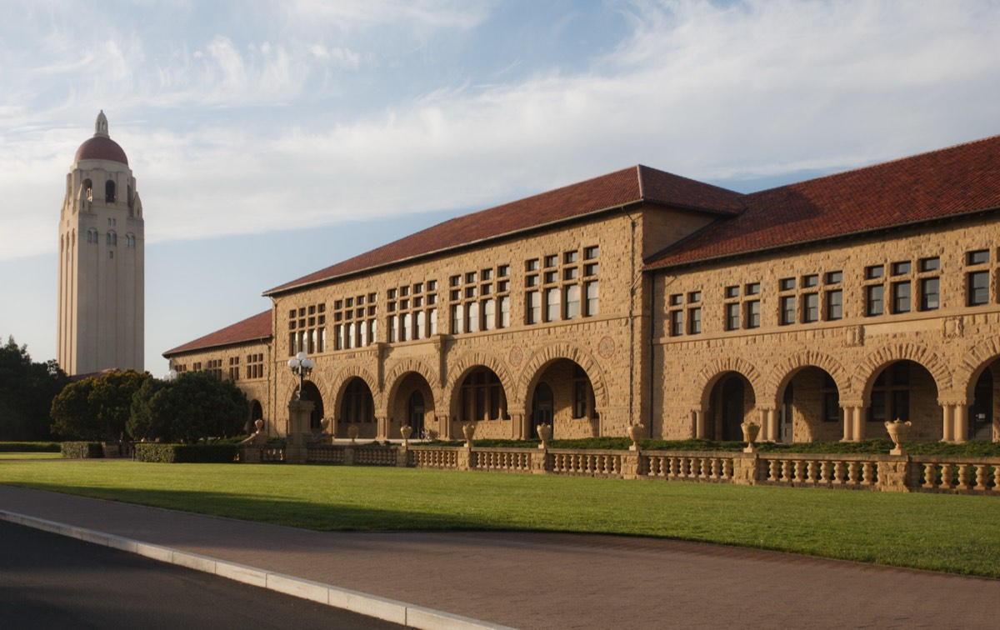

Hội nghị Viên chức Ban Khoa học, Công nghệ và Đổi mới sáng tạo · Năm học 2025–2026
Tham luận
"Triển khai hoạt động Đổi mới sáng tạo tại HaUI: Thực trạng và kiến nghị"
Người trình bàyBùi Tiến Sơn
Đơn vịPhòng Đổi mới sáng tạo
Thời gianThứ Bảy, 12/9/2026 · Phòng 603, Nhà A1
01 Đặt vấn đề
Cả nước đang cùng lúc đổi luật chơi
NQ57-NQ/TW · 24/12/2024
Đột phá phát triển khoa học, công nghệ, đổi mới sáng tạo và chuyển đổi số quốc gia — yêu cầu xây dựng "thể chế vượt trội, chấp nhận rủi ro trong khuôn khổ kiểm soát" cho KH-CN-ĐMST.
NĐ 268/2025/NĐ-CP
Lần đầu tiên có tiêu chí pháp lý cụ thể để công nhận trung tâm ĐMST / hỗ trợ khởi nghiệp trong trường đại học (Điều 29–46) — cả nước mới có hành lang pháp lý từ đây.
→ Không riêng HaUI. Mọi đại học Việt Nam đang ở gần cùng một vạch xuất phát.
Trích dẫn: Ban Chấp hành Trung ương Đảng. (2024). Nghị quyết số 57-NQ/TW ngày 24/12/2024 về đột phá phát triển khoa học, công nghệ, đổi mới sáng tạo và chuyển đổi số quốc gia.·Chính phủ. (2025). Nghị định số 268/2025/NĐ-CP, Điều 29–46. Công báo Chính phủ, congbao.chinhphu.vn.
02 Khung phân tích
ĐMST đại học vận hành bằng 4 khối chức năng
01 · NCKH → CGCN
Chuyển giao công nghệ ra thị trường, hợp đồng dịch vụ KHCN
02 · SHTT
Sở hữu trí tuệ, cấp bằng sáng chế, định giá tài sản trí tuệ
03 · Ươm tạo
Spin-off từ nghiên cứu, startup sinh viên, vốn mồi
04 · Kết nối DN
Doanh nghiệp đặt hàng nghiên cứu, nhà đầu tư
03 Bức tranh quốc tế
4 mô hình quản trị — tuổi đời hàng thập kỷ
1972KU Leuven LRD · TTO nội bộ
1986MIT TLO · TTO nội bộ
1987Oxford Innovation · Holdings

1970Stanford OTL · TTO nội bộ
1995Cambridge Enterprise · Holdings
2005Harvard OTD · TTO nội bộ
TTO nội bộ trong trườngHoldings tách pháp nhânMạng lưới / nền tảng mởMô hình lai
Ảnh: Wikimedia Commons, CC BY-SA — KU Leuven Library (Wentao Jiang) · Great Dome, MIT (Mys 721tx) · Radcliffe Camera, Oxford (Zhushenje) · Stanford Main Quad (King of Hearts) · King's College Chapel, Cambridge (Martinvl) · Harvard aerial (Nick Allen).
04 Điểm chung
3 điều mọi case thành công đều có
100%
Có pháp nhân / đơn vị chuyên trách — không kiêm nhiệm
35%
Harvard OTD chia cố định tiền bản quyền ròng cho tác giả
$33tr+
Harvard Blavatnik Accelerator đã cấp cho 178 dự án
Nguồn: Innovation Center Atlas — Harvard Office of Technology Development, dữ liệu công bố FY2024–2025, tổng hợp buitienson.github.io/innovation-center-atlas.
05 Việt Nam đã đi trước
Cùng khung pháp lý — đã tìm được lối đi
BK Holdings / BK TTO — ĐH Bách khoa Hà Nội, từ 2008 · Hàng chục spin-off: BKAV, VietSearch, VnTrack…
PTIT IEC — Học viện CNBCVT · 2 dự án spin-off, đang ươm tạo 10 dự án công nghệ
Rào cản pháp lý không phải bất khả thi — chỉ cần lộ trình và quyết tâm tổ chức.
Ảnh: Hường Hoàng. (2023, 24/1). BK Holdings tiên phong đổi mới sáng tạo trong trường đại học. TheLeader. theleader.vn · iec.ptit.edu.vn (ảnh chính thức, 2026).
06 Không chỉ HaUI mới vướng
Báo chí đã gọi tên rào cản này
"Nhiều trường đại học chưa đầu tư đủ vào các văn phòng chuyển giao công nghệ (TTOs)…"
Hiếu Nguyễn. (2026, 16/7). Những rào cản kìm hãm chuyển giao kết quả nghiên cứu từ đại học. Báo Giáo dục & Thời đại. giaoducthoidai.vn
"Việc thương mại hoá các nghiên cứu khoa học còn rất khó khăn bởi chính sách chưa đồng bộ, tạo nên rào cản."
Trần Lưu. (2024, 25/4). Thương mại hóa kết quả nghiên cứu khoa học: Vẫn chưa hiệu quả. Báo Sài Gòn Giải Phóng. sggp.org.vn
doanh nghiệp spin-off / năm — mục tiêu quốc gia từ kết quả nghiên cứu & khởi nghiệp đại học
Trích dẫn: Thủ tướng Chính phủ. Quyết định số 844/QĐ-TTg (Đề án hỗ trợ hệ sinh thái khởi nghiệp ĐMST quốc gia) · Nghị định số 94/2020/NĐ-CP (chức năng NIC) · mst.gov.vn, 26/6/2026.
Vậy còn HaUI?
HaUI đang ở đâu trong bức tranh này?
08 HaUI tái định vị
Từ "Trường Đại học" → "Đại học"
QĐ 2536/QĐ-TTg · 20/11/2025
"Đại học định hướng đổi mới sáng tạo"
Con ngườiCông nghệHệ sinh thái
Đại học Công nghiệp Hà Nội — Toà nhà A1
Trích dẫn: Thủ tướng Chính phủ. Quyết định số 2536/QĐ-TTg, 20/11/2025 · Phát biểu lãnh đạo HaUI, báo Tiền Phong (2026) — cần đối chiếu văn kiện chính thức khi Chiến lược 2026–2030 ban hành. Ảnh: Wikimedia Commons, Huynh ICT, CC BY-SA 4.0, 3/9/2019.
09 Nhưng…
Khoảng cách giữa tuyên bố và văn kiện
Chiến lược phát triển 2026–2030
Đang soạn · chưa ban hành
Ngay NQ57 cũng tự nhận: khung chiến lược giáo dục đại học ở cấp quốc gia "chưa ban hành đúng tiến độ".
Định hướng đúng nhưng chưa thể chế hoá bằng cơ chế cụ thể rất dễ dừng lại ở khẩu hiệu mang màu sắc dân tuý — bài học chung của không ít nơi khi chính sách ĐMST chạy theo phong trào.
Nguồn: Ban KHCN&ĐMST HaUI. Báo cáo dự thảo Hội nghị Viên chức năm học 2025–2026 (nội bộ), tr.1 · NQ57-NQ/TW, mục tồn tại-hạn chế.
10 Cái giá của việc đứng yên
Mỗi năm chậm là một năm mất thật
Thế hệ kế cận đang rời xa
Sinh viên tham gia NCKH giảm 13,7% so với năm trước — trong khi cả nước đặt cược vào lớp trẻ cho làn sóng ĐMST.
Tiền để trên bàn, không ai lấy
666,6 triệu đồng doanh thu CGCN/năm — trong khi quốc gia đặt mục tiêu 5–10 spin-off/năm cho MỖI đại học có tiềm lực.
9 người gánh việc của cả một trung tâm
Không có pháp nhân chuyên trách nghĩa là rủi ro quá tải, kiệt sức, và mất người giỏi vào tay nơi khác.
Đang tụt lại so với trường cùng hạng
BK Holdings, PTIT IEC đã có spin-off thật. Mỗi năm HaUI chưa có, khoảng cách trên bảng xếp hạng ĐMST đại học càng xa.
11 Hạ tầng ĐMST
So với 2 trường bạn
BK Holdings/TTO
PTIT IEC
HaUI (2026)
Pháp nhân chuyên trách
Có · từ 2008
Có
Chưa có — mô hình trên giấy
Spin-off đã hình thành
Hàng chục
2
0
Vườn ươm khởi nghiệp
Có
Có · 10 dự án
Chưa có
Nguồn: Khảo sát thực địa dự án "HaUI Innovation Center" (biên bản làm việc TBI, IEC, 8/2026) · Báo cáo dự thảo Hội nghị Viên chức Ban KHCN&ĐMST HaUI, năm học 2025–2026.
12 Vì sao chưa có
Nguồn lực rất mỏng so với khối lượng việc
9
viên chức — toàn bộ Ban KHCN&ĐMST
3
phòng chuyên môn: Quản lý nhiệm vụ KHCN · Thông tin KHCN&ĐMST · Đổi mới sáng tạo
Chức năng đã đủ cả — tham mưu, CGCN, SHTT, dịch vụ KHCN&ĐMST. Thiếu người để vận hành hết, không thiếu trên giấy.
Nguồn: Chức năng nhiệm vụ Ban KHCN&ĐMST HaUI, khcn.haui.edu.vn · Báo cáo dự thảo Hội nghị Viên chức năm học 2025–2026.
13 Lộ trình Trung tâm ĐMST HaUI
Đang ở Pha 1 / 3
2026 · Pha 1
Khảo sát 9 đơn vị, mô hình đề xuất — trên giấy
2027 · Pha 2
Vận hành hoá mô hình — 2,3–3 tỷ đồng
2028 · Pha 3
Nhân rộng
Trích dẫn: Bộ Công Thương. Quyết định số 359/QĐ-BCT, 27/2/2026 (phê duyệt danh mục nhiệm vụ KHCN 2026) · Hợp đồng số 10/HĐ-TCC, 18/3/2026.
14 Số liệu 2025–2026
Nghiên cứu không thiếu — chuyển hoá còn yếu
99
đề tài NCKH — 73 cơ sở · 22 Bộ/Tỉnh · 4 Nhà nước
19
kết quả SHTT — 3 sáng chế, 2 GPHI, 14 đơn chờ
666,6tr
doanh thu CGCN — chỉ 4 hợp đồng
−13,7%
sinh viên tham gia NCKH so với năm trước
Nguồn: Ban KHCN&ĐMST HaUI. Báo cáo dự thảo Hội nghị Viên chức năm học 2025–2026 (nội bộ), tr.2–5.
15 Nút thắt pháp lý
Gốc rễ: không đứng tên cổ phần được
→ Đơn vị sự nghiệp công lập không được đứng tên cổ phần — muốn thương mại hoá phải lập công ty TNHH MTV do trường sở hữu 100% vốn
→Khoảng trống định giá tài sản trí tuệ — xác nhận ở cả HUIT, TBI, IUH khi khảo sát thực địa, và không tài liệu quốc tế nào trong bộ nguồn mô tả quy trình cụ thể
Nguồn: Khảo sát thực địa HUIT/TBI/IUH, dự án HaUI Innovation Center, 8/2026 · Rà soát pháp lý nội bộ, 02-trien-khai/03. co-so-phap-ly.
16 Cửa sổ đang mở — không mở mãi
Cơ hội có thể vuột mất
Kinh phí đã duyệt cho 2026
QĐ 359/QĐ-BCT đã cấp ngân sách cho nhiệm vụ Trung tâm ĐMST — không tiêu hết đúng lộ trình, cơ hội không lặp lại dễ dàng.
NQ57 đang ở năm đầu triển khai
Ưu tiên chính trị và ngân sách cho ĐMST thường tập trung cao nhất ở giai đoạn đầu chính sách mới.
Mạng lưới quốc tế đang chủ động gõ cửa
Swiss Entrepreneurship Programme đã ngỏ ý hợp tác với HaUI (21/8/2026) — không phải mình phải đi tìm.
Mục tiêu quốc gia đi kèm ưu đãi giai đoạn đầu
5–10 spin-off/năm là mục tiêu quốc gia — cơ chế hỗ trợ, quỹ mồi thường ưu tiên đơn vị hành động sớm.
Nguồn: QĐ 359/QĐ-BCT, 27/2/2026 · Ghi nhận làm việc với Swiss EP, 21/8/2026 (nội bộ dự án HaUI Innovation Center) · mst.gov.vn, 26/6/2026.
17 Tổng hợp
4 nhóm nguyên nhân
Thể chế / pháp lý
Chiến lược 2026–2030 chưa ban hành · không đứng tên cổ phần · khoảng trống định giá SHTT
Tổ chức / nhân lực
Chưa có pháp nhân chuyên trách · Ban KHCN&ĐMST chỉ 9 người
Tài chính / động lực
Doanh thu CGCN nhỏ · chưa có cơ chế chia sẻ lợi ích SHTT rõ ràng
Thời điểm / lộ trình
Khung pháp lý quốc gia và vị thế "Đại học" đều rất mới (2025) · Trung tâm mới Pha 1/3
18 Kiến nghị ngắn hạn · 2026–2027
4 việc làm được ngay
1CHỐT chỉ tiêu ĐMST đo lường được ngay trong Chiến lược 2026–2030 — không chờ hoàn thiện toàn văn kiện mới có mục tiêu
2THÍ ĐIỂM cơ chế chia sẻ lợi ích SHTT ngay trong 2026 — không đợi Trung tâm vận hành ở Pha 2/2027
3CHUẨN HOÁ thiết kế Trung tâm ĐMST theo đúng NĐ 268/2025 (Điều 29–46) ngay từ Pha 1 — tránh phải làm lại
4TẬN DỤNG cửa sổ hợp tác quốc tế đang mở (Swiss EP, mạng lưới VNEI/HANISA) trước khi nó khép lại
19 Kiến nghị trung hạn
Đi nhanh hơn bằng cách học người đi trước
5CỬ ĐOÀN học trực tiếp từ BK Holdings/BK TTO, PTIT IEC — cùng khung pháp lý Việt Nam, không cần tự nghiên cứu lại từ đầu
6ĐO LƯỜNG từng mốc năm: số hợp đồng CGCN, doanh thu, số spin-off — đưa thẳng vào Chiến lược 2026–2030
7ĐỀ XUẤT cơ chế thử nghiệm có kiểm soát (sandbox) nội bộ cho hoạt động thương mại hoá công nghệ — đúng tinh thần "thể chế vượt trội, chấp nhận rủi ro trong khuôn khổ kiểm soát" của NQ57
Đề xuất: dùng công cụ này làm điểm tra cứu chung khi các đơn vị trong VNEI/HANISA thiết kế mô hình của riêng mình — tiết kiệm thời gian nghiên cứu lại từ đầu. Tác giả: Bùi Tiến Sơn, 2026.
Cùng tinh thần với Trung tâm ĐMST: một công cụ nhỏ, tự làm, giải quyết đúng một điểm nghẽn thật trong quy trình nghiên cứu — không cần chờ dự án lớn mới bắt đầu.
Kết luận
HaUI không thiếu quyết tâm — đang thiếu thời gian thể chế hoá
Học nhanh · Chuẩn hoá ngay · Đo lường được
Cảm ơn hội nghịBùi Tiến Sơn · Phòng Đổi mới sáng tạo
 1986MIT TLO · TTO nội bộ
1986MIT TLO · TTO nội bộ 1987Oxford Innovation · Holdings
1987Oxford Innovation · Holdings